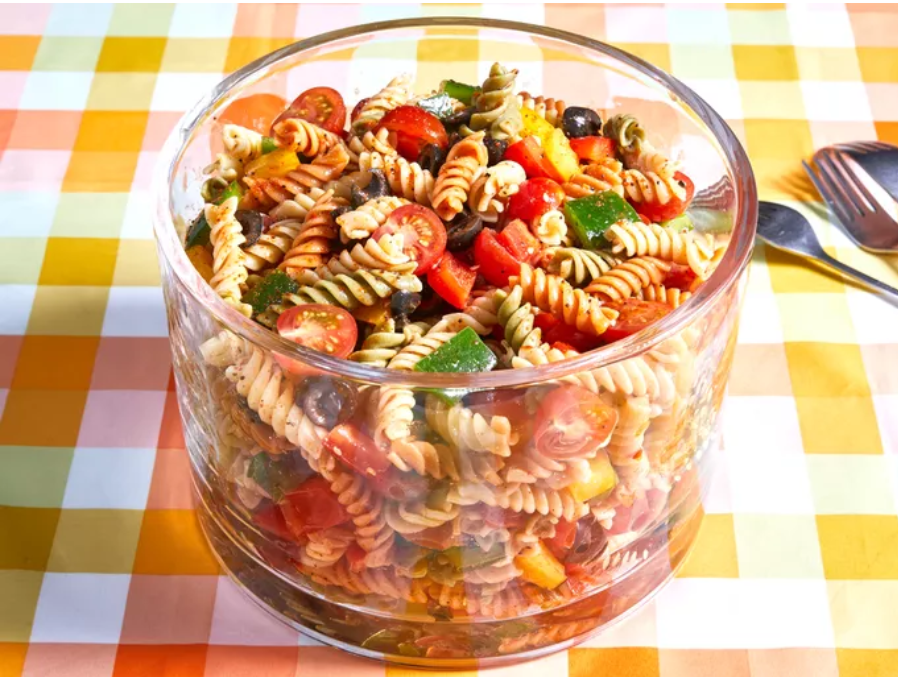

Pasta Salad

Description
This vibrant pasta salad combines tri-colored spiral pasta with zesty Italian-style salad dressing, seasoned with salad seasoning mix,
and loaded with diced cherry tomatoes, green, red, and yellow bell peppers, and chopped black olives.
Ingredients
- 1 pound tri-colored spiral pasta
- 1 (16 ounce) bottle Italian-style salad dressing
- 6 tablespoons salad seasoning mix
- 2 cups cherry tomatoes, diced
- 1 green bell pepper, chopped
- 1 red bell pepper, diced
- ½ yellow bell pepper, chopped
- 1 (2.25 ounce) can black olives, chopped
Steps
- Gather all ingredients.
- Bring a large pot of lightly salted water to a boil. Cook pasta in the boiling water, stirring occasionally, until tender yet firm to the bite, about 10 to 12 minutes; rinse under cold water and drain.
- Whisk Italian dressing and salad spice mix together until smooth. Combine pasta, tomatoes, bell peppers, and olives in a salad bowl.
- Pour dressing over salad and toss to coat.
- Refrigerate salad, 8 hours to overnight.
- Enjoy!
GO BACK